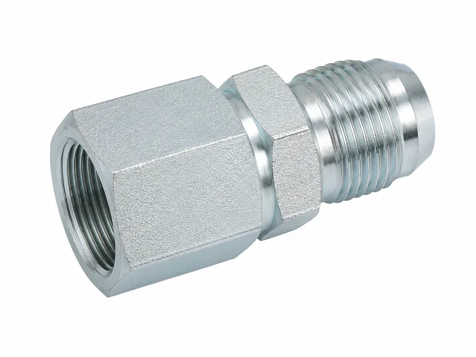
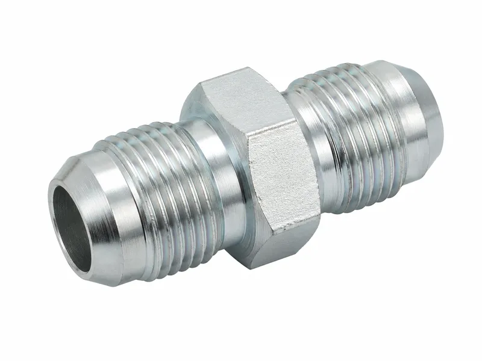
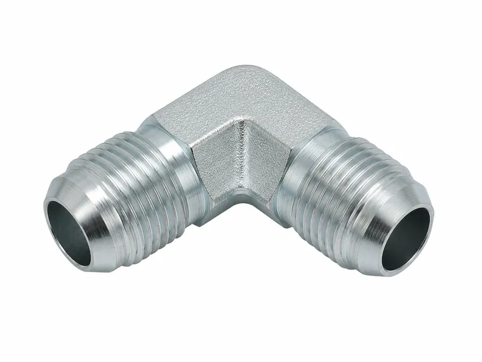
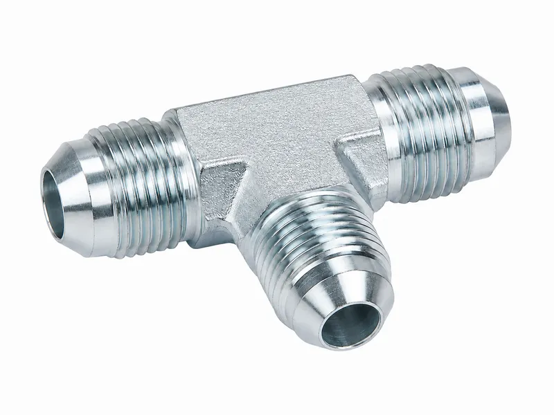

液压接头





| 产品类型 | JIC 37° 扩口接头及液压过渡接头 |
| 密封方式 | 37° 金属锥面扩口密封 |
| 螺纹类型 | JIC 液压接头常用 UNF 直螺纹 |
| 连接形式 | 外螺纹接头、内螺纹旋转接头、弯头、三通、穿板和变径接头 |
| 标准参考 | SAE J514 形式的 37° 扩口连接结构 |
| 材质选择 | 常规使用碳钢，可提供不锈钢提升耐腐蚀性 |
| 表面处理 | 三价铬镀锌、锌镍镀层或不锈钢抛光表面 |
| 尺寸范围 | 适用于移动机械和工业液压系统的常用管径与螺纹规格 |
| 制造控制 | CNC 加工锥面、螺纹通止规检测和去毛刺处理 |
| 定制方式 | 可定制六角尺寸、螺纹长度、角度和镀层 |
JIC 接头采用 37° 金属扩口密封面，不同于 ORFS 的 O 形圈端面密封，也不同于 NPT 的锥螺纹密封。JIC 常用于需要紧凑、可重复拆装的软管和硬管连接。采购时不要将 JIC 与 SAE 45° 扩口件混用，因为密封角度不同。
精密37°扩口座可在JIC连接中形成稳定的金属接触密封。
精密UNF螺纹便于顺畅旋合，并保持接头连接同轴度。
在密封面完好的情况下，扩口连接便于拆装检查和再次装配。
JIC接头适用于软管、硬管与设备端口之间的可靠转换。
弯头、三通和穿板形式便于液压管路在紧凑空间中布置。
光洁的密封面有助于降低泄漏风险并保护配合扩口面。
机加工六角面可在拧紧和维护时提供稳定工具接触。
穿板JIC接头适合面板、支架或隔板处的过渡连接。
稳定的座面角度有助于保持配合件之间的接触一致性。
防护表面可降低搬运、储存和使用过程中的锈蚀。
JIC端可与BSP、NPT或公制端口组合，满足系统转换需要。
短体和角向结构有助于让软硬管走向更加整洁。
特殊长度、端口组合和本体形状可按图纸加工。
可拆式连接便于液压管路的检查、替换和维修。
稳定加工可支持OEM生产和替换件兼容性。
去毛刺边缘有助于避免装配时损伤螺纹和密封面。
当系统使用 37° 扩口管端或 JIC 软管总成时，建议选择 JIC 扩口接头。
不要将 JIC 37° 扩口接头与 45° 扩口接头混用，因为密封锥角不同。
高振动系统应确认正确拧紧扭矩，并合理布置软管以减少接头应力。
液压系统在户外、船舶或腐蚀环境中工作时，可选择不锈钢版本。
替换接头时应在采购前确认螺纹尺寸、座角、管径和旋转螺母形式。
项目需要特殊角度、加长螺纹或非标六角本体时，建议提供图纸定制。
常见 JIC 37° 扩口接头包括直通外螺纹接头、内螺纹旋转接头、90°弯头、45°弯头、三通接头、穿板接头、软管端接头以及定制 JIC 适配器。不同结构可用于液压软管总成、油管连接、移动机械管路、紧凑设备布局以及维修替换场景，便于采购和工程人员根据管路走向选择合适形式。
JIC 液压接头采用 37° 扩口密封面，通过金属扩口锥面形成密封接触。正确选型并规范装配后，JIC 37° 扩口接头具有可重复拆装、装配方便、适用于高压液压管路等特点，因此在工程机械、农业设备和工业液压系统中应用广泛。
采购替换件时，应注意 JIC 37° 扩口不要与 SAE 45° 扩口或其他螺纹形式混用；角度差异会影响密封面贴合，可能导致装配后渗漏。
JIC 接头通常与 UNF 螺纹和 37° 扩口密封座相关，也可被称为 UNF 螺纹液压接头。下单前需要确认螺纹规格、扩口角度、公母连接形式，以及与软管接头或油管接头的匹配关系。
即使外观看起来相似，采购和工程人员也不应将 JIC 与 BSP、NPT、ORFS 或公制螺纹混用。确认标准后再采购，有助于减少现场返工和泄漏风险。
JIC 37° 扩口接头可根据工况选择碳钢、不锈钢等材料。碳钢适用于常规液压设备，不锈钢更适合潮湿、户外或对耐腐蚀性要求较高的环境。
表面处理可根据需求选择三价铬镀锌、锌镍合金、发黑或不锈钢抛光等方案。材质和表面处理应结合耐腐蚀要求、压力等级、介质兼容性和实际应用环境进行确认。
选择 JIC 37° 扩口接头时，建议先确认螺纹规格、扩口角度、压力等级、管径或软管尺寸、公母连接形式和密封面状态，再结合安装空间和应用环境判断直通、弯头、三通或穿板结构是否合适。
扩口密封面损伤、角度错误或螺纹不匹配都可能导致泄漏。对于维修替换件，应尽量以原件规格、图纸或样品为依据，避免仅凭外形判断。
威兴机械可根据图纸、样品、材质要求、螺纹要求和表面处理要求进行 JIC 液压接头定制加工，适用于 OEM 液压设备配套和维修替换项目。
加工过程可覆盖 CNC 加工液压接头、螺纹检测、扩口密封座控制、六角本体加工和特殊 JIC 适配器制造，帮助客户获得与实际装配需求匹配的 CNC 加工液压接头。
JIC 扩口接头可以按照图纸定制加工吗？
可以。威兴机械可根据图纸、样品、材质要求和表面处理要求定制JIC 扩口接头及相关 CNC 零部件。
下单前需要确认哪些参数？
建议确认37° 扩口密封结构、规格尺寸、工作压力、材质、密封方式和实际应用环境。
可以选择哪些材质？
常用材质包括碳钢、不锈钢、铝、黄铜或球墨铸铁，具体取决于产品类型和使用环境。
可以提供哪些表面处理？
可根据需求提供三价铬镀锌、锌镍合金、发黑、抛光或其他指定表面处理。